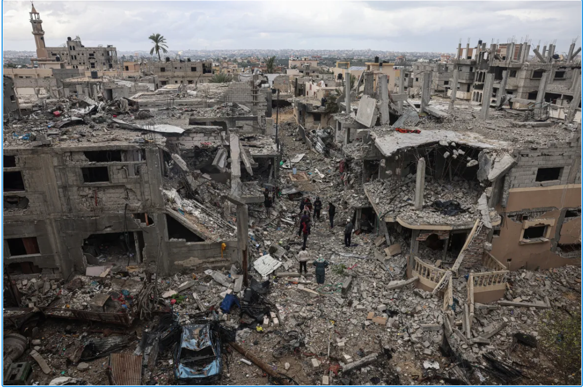

WORLD NEWS
| Israel-Palestine conflict
‘We will rebuild’: Gaza families return to homes in ruins
Since Friday, a truce has paused the fighting between Israel and Hamas, allowing them to return to homes in ruins.
30 | Nov | 2023
Tea and cheese sandwiches are on the breakfast menu for Taghrid al-Najjar’s children. It should be an everyday moment, but their home in Gaza is now mostly rubble.
The walls have collapsed, with furniture and appliances buried under concrete. Until the war, the 46-year-old mother had never left her farming village along the border with Israel in the southeast of the Strip. Since Friday a truce has paused the fighting between Israel and Hamas, allowing them to return to a neighbourhood in ruins. “It is only here that I feel good,” she said.Al-Najjar fled when Israeli bombardments started on October 7 in response to an attack by Hamas that killed 1,200 Israelis. For weeks she lived with nine members of her family in a Khan Younis school converted into a makeshift camp for displaced people. At least 15,000 people, mostly civilians, have been killed in Israel’s war in Gaza, and al-Najjar said dozens of people in her wider extended family have died. As soon as the truce went into effect on Friday, she began making her way home to Abasan on foot. “I discovered that my house had been completely destroyed – 27 years of my life to build it and everything is gone!” she said. “For two days I couldn’t eat, then I told myself that I had to continue living.
“My house is destroyed but my children are alive, so we will rebuild. We have already done it once, we can do it again.” Each night the family squeezes through a window to sleep in the only room where the walls have not entirely crumpled. Once there is a permanent ceasefire, Najjar said, they will pitch a tent, but only for “long enough to rebuild the house”. Her 64-year-old neighbour Jamil Abu Azra’s main concern was his four young grandchildren. “They can sleep anywhere, the problem is that they are afraid and they are traumatised,” he said. “Even us adults are afraid, but we pretend in front of the little ones.”
‘The war really scared us’
Across the street, Bassem Abu Taaima contemplated the destroyed building where his family and his four brothers’ families had lived. “We are all farmers or taxi drivers. We really have nothing to do with the resistance,” he said, “so we don’t understand why all this is happening to us.” Wearing a jacket given to him by a neighbour, and shorts despite the biting cold, he said he would wait for the war to end before setting up a tent and starting to clear and rebuild. He has scoured the debris for warm clothes, although everything he has found has been burned or torn. Nearby, Naim Taaimat, 46, was building a shelter for his family from wood, some fabric and a few nails. “This is where I will live with my wife, our seven children and my mother after the war,” he said. More tents will be needed as his brothers – each has seven children – “have also lost their homes”, he added.
The brothers “shed blood” to build the houses where the families’ possessions are now buried under rubble. Taaimat’s priority was to find his daughter Nivine’s trousseau, as she had been due to get married next week. He used a hammer to try to break up the concrete blocks before rummaging around with his bare hands. “Now she’s lost her house and her fiance also lost his house. So I have to find something so that she can still be a little happy.” Twelve-year-old Abdessamad interrupted, running in shouting: “We found an electric lamp and we have logs for the fire!” Sitting with his friends on a dirt floor near the United Nations school where he used to study, now partly wrecked by Israeli bombing, he laughed, sang and joked. “The war really scared us and it was horrible, but there is good news,” said his friend Nabil, aged eight. Laughing, and hoping his parents couldn’t overhear him, he explained: “The school’s destroyed and we won’t be able to go back for a while.”